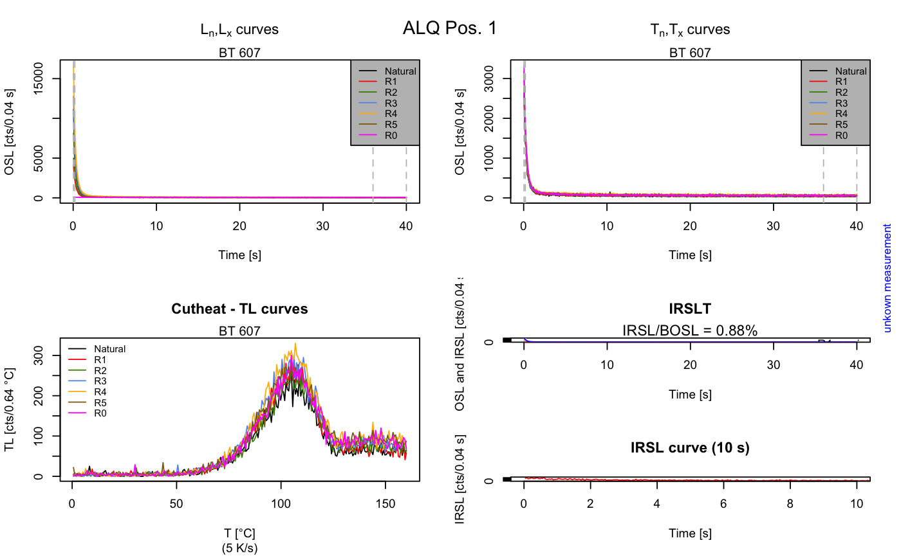

Analyse_SAR.OSLdata.RdThe function analyses SAR CW-OSL curve data and provides a summary of the measured data for every position. The output of the function is optimised for SAR OSL measurements on quartz.
Analyse_SAR.OSLdata(input.data, signal.integral, background.integral, position, run, set, dtype, keep.SEL = FALSE, info.measurement = "unkown measurement", output.plot = FALSE, output.plot.single = FALSE, cex.global = 1, ...)
| input.data | Risoe.BINfileData (required): input data from a Risoe BIN file, produced by the function read_BIN2R. |
|---|---|
| signal.integral | vector (required):
channels used for the signal integral, e.g. |
| background.integral | vector (required):
channels used for the background integral, e.g. |
| position | vector (optional):
reader positions that want to be analysed (e.g. |
| run | vector (optional):
range of runs used for the analysis. If no value is given the range of the
runs in the sequence is deduced from the |
| set | vector (optional):
range of sets used for the analysis. If no value is given the range of the
sets in the sequence is deduced from the |
| dtype | character (optional):
allows to further limit the curves by their data type ( |
| keep.SEL | logical (default):
option allowing to use the |
| info.measurement | character (with default): option to provide information about the measurement on the plot output (e.g. name of the BIN or BINX file). |
| output.plot | logical (with default):
plot output ( |
| output.plot.single | logical (with default):
single plot output ( |
| cex.global | numeric (with default): global scaling factor. |
| ... | further arguments that will be passed to the function
calc_OSLLxTxRatio (supported: |
A plot (optional) and list is returned containing the following elements:
data.frame of all calculated Lx/Tx values including signal, background counts and the dose points.
data.frame with values that might by used as rejection criteria. NA is produced if no R0 dose point exists.
data.frame of additional measurement parameters obtained from the BIN file, e.g. preheat or read temperature (not valid for all types of measurements).
The function works only for standard SAR protocol measurements introduced by Murray and Wintle (2000) with CW-OSL curves. For the calculation of the Lx/Tx value the function calc_OSLLxTxRatio is used.
Provided rejection criteria
[recyling ratio]: calculated for every repeated regeneration dose point.
[recuperation]: recuperation rate calculated by comparing the Lx/Tx values of the zero
regeneration point with the Ln/Tn value (the Lx/Tx ratio of the natural
signal). For methodological background see Aitken and Smith (1988)
[IRSL/BOSL]: the integrated counts (signal.integral) of an
IRSL curve are compared to the integrated counts of the first regenerated
dose point. It is assumed that IRSL curves got the same dose as the first
regenerated dose point. Note: This is not the IR depletation ratio
described by Duller (2003).
Rejection criteria are calculated but not considered during the analysis to discard values.
The analysis of IRSL data is not directly supported. You may want to consider using the functions analyse_SAR.CWOSL or analyse_pIRIRSequence instead.
The development of this function will not be continued. We recommend to use the function analyse_SAR.CWOSL or instead.
0.2.17
Aitken, M.J. and Smith, B.W., 1988. Optical dating: recuperation after bleaching. Quaternary Science Reviews 7, 387-393.
Duller, G., 2003. Distinguishing quartz and feldspar in single grain luminescence measurements. Radiation Measurements, 37 (2), 161-165.
Murray, A.S. and Wintle, A.G., 2000. Luminescence dating of quartz using an improved single-aliquot regenerative-dose protocol. Radiation Measurements 32, 57-73.
##load data data(ExampleData.BINfileData, envir = environment()) ##analyse data output <- Analyse_SAR.OSLdata(input.data = CWOSL.SAR.Data, signal.integral = c(1:5), background.integral = c(900:1000), position = c(1:1), output.plot = TRUE)#> #> [Analyse_SAR.OSLdata()] >> Figure for position 1 produced.##combine results relevant for further analysis output.SAR <- data.frame(Dose = output$LnLxTnTx[[1]]$Dose, LxTx = output$LnLxTnTx[[1]]$LxTx, LxTx.Error = output$LnLxTnTx[[1]]$LxTx.Error) output.SAR#> Dose LxTx LxTx.Error #> 1 0 4.31385656 0.049585512 #> 2 450 1.54110507 0.020078494 #> 3 1050 3.03229838 0.035808499 #> 4 2000 4.59447529 0.050759620 #> 5 2550 5.31012713 0.054631294 #> 6 450 1.61167200 0.019431239 #> 7 0 0.01668642 0.001735488